alpha phit
1 0.6787451 0.7483018Optimal arc to maximize reward
Participants received points based on how wide their arc was and whether it included the target. The formula for the points \(p\) is:
\[ p = \left(\pi - \alpha\right)\bigl[|y| \le \alpha \bigr]. \]
where \(y\) is the distance between the point response and the target, and the square brackets are Iverson bracket notation that evaluates to 1 if the statement is true and 0 otherwise. \(\alpha\) is the half-width of the symmetric arc around the response. All variables are in radians (although the points received were based on degrees).
The equation for \(p\) suggests that given a fixed distribution for the random variable \(Y\), there might be an optimal arc width response. When you decrease the arc width you get more points due to the \(\pi-\alpha\) term, but you increase the probability that you miss the target and receive 0 points.
We can analytically determine what the optimal \(\alpha\) would be for any given distribution on \(Y\). We want to maximize the expected reward. Let \(g: \mathbb{R}^+ \to \mathbb{R}^+\) be a function of \(\alpha\) that gives the expected reward:
\[ g(\alpha) = \mathbb{E}[p] = \left(\pi - \alpha\right)\text{Pr}(|Y| \leq \alpha), \quad 0\leq \alpha \leq \pi. \]
Let \(F(y)\) be the cumulative distribution function for \(Y\). Then the probability that the absolute value of Y is less than or equal to \(\alpha\) is:
\[ \text{Pr}(|Y| \leq \alpha) = F(\alpha) - F(-\alpha). \]
If we assume a symmetric unimodal distribution around 0, \(F(-\alpha) = 1 - F(\alpha)\) and so our expression for \(g(\alpha)\) simplifies to:
\[ g(\alpha) = \left(\pi - \alpha \right) \left(2F(\alpha) - 1\right). \]
To maximize the expected reward, we can find where the first derivative of \(g\) vanishes. Differentiate and set equal to 0:
\[ \begin{aligned} g'(\alpha) = -(2F(\alpha)-1) + \left(\pi - \alpha \right)2F'(\alpha) = 0 \\ \left(\pi - \alpha \right) F'(\alpha) = F(\alpha) - 0.5 \end{aligned} \]
The optimal \(\alpha\) is the value the solution to that equation. It can also be expressed as a fixed point form for the optimal value for \(\alpha\):
\[ \alpha = \pi - \frac{F(\alpha) - 0.5}{F'(\alpha)} = \pi - \frac{F(\alpha) - 0.5}{f(\alpha)} \]
where \(f(\alpha)\) is the probability density.
Theoretical changes in optimal responses
The above analysis tells us that given a specific memory distribution, there is a theoretically optimal arc width, which also corresponds to a theoretically optimal hit rate - the proportion of trials on which the the arc includes the target. We can use these equations to find how the optimum arc width and hit rate changes as some parameter of the distribution changes.
The simplest case and a sanity check is the optimum under a uniform distribution on \((-\pi,\pi]\) with no information.
\[ \begin{aligned} f(y) &= \frac{1}{2\pi}, \quad F(y) = \frac{\pi+y}{2\pi} \\ \alpha &= \pi - \frac{\frac{\pi+\alpha}{2\pi}-0.5}{\frac{1}{2\pi}} = \pi - \alpha \\ \alpha &= \pi/2 \end{aligned} \]
Since \(\alpha\) is the half-width arc in radians, it means that the optimal full arc under no information is exactly half the circle.
Now, let’s take the SDM and vary the \(c\) parameter and find the optimum arc width and hit rate. Here are the results for one set of parameters (note that alpha is the half-width arc in radians).
So let’s vary \(c\), with fixed \(\kappa = 3\):
sdm_optim_long |>
ggplot(aes(c, optimal_value)) +
geom_line() +
facet_wrap(~variable, scales = "free")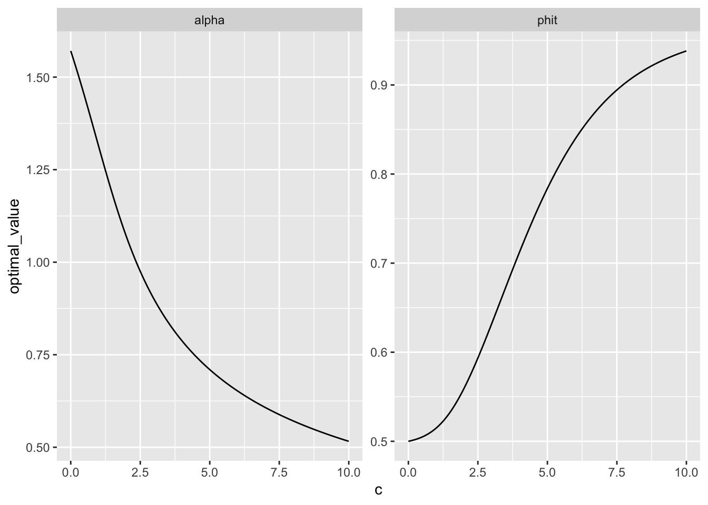
As the strength of the memory distribution increases, the optimal arc width decreases, and the optimal hit rate increases as well. This was the first surprise to me - it was clear that the optimal arc will become smaller, but I had thought that the optimal hit rate might be a constant level!
This means we can test whether people’s actual arc responses and hit rates conform to optimality under perfect information about the shape of their memory distribution.
Predicted optimal arc width and hit rates based on the empirical distribution of responses
There are two ways we can check if people’s responses are optimal:
- Parametricly. Fit the SDM or another plausible model to the point response distributions, then find the optimum with the same function above based on the inferred SDM distribution
- Non-parametricly. Treat the point responses as samples from the underlying distribution and use the empirical cdf to derive the optimum arc width.
In both cases, we are not using the arc-width or phit values at all - only the point responses. Therefore, we can make a completely parameter-free prediction about them.
First, let’s do the non-parametric analysis over different set size conditions. We have 8 set sizes and these are the empirical error distributions, collapsed over subjects:
data <- read.csv("output/exp1_data.csv")
ss_exp <- data |>
filter(exp_type == "SetS") |>
group_by(subject) |>
# the next filter is needed because some participants did two setsize experiments and we only take the first one so that all subjects have the same amount of data
filter(experimentorder == if_else(length(subject) > 1000, 1, min(experimentorder))) |>
ungroup() |>
select(subject, blocknumber, setsize, resperr, arc, points, experimentorder) |>
mutate(
hit = as.numeric(points > 0),
subject = as.factor(subject),
setsize = as.factor(setsize))
ggplot(data, aes(resperr)) +
geom_histogram(bins = 60) +
facet_wrap(~setsize, scales = "free")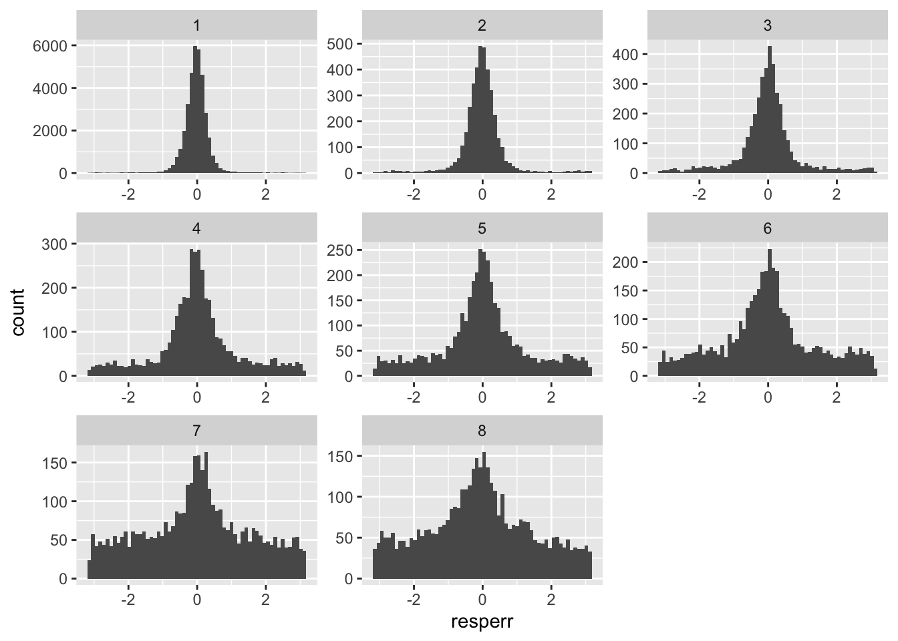
Next, we find the optimum arc width and phit under these empirical distributions.
First, a sanity check that this empirical approach works. We generate data from the sdm under the c values as above, and now use the generated data to estimate the optimum instead of the theoretical optimum. Then compare with the above theoretical optimum. We have 4000 trials per setsize in the real data, so simulate that many.
find_empirical_optimum <- function(y) {
Fe <- ecdf(y)
obj <- function(alpha) (pi - alpha) * (Fe(alpha) - Fe(-alpha))
fit <- optimise(obj, interval = c(0, pi), maximum = TRUE)
data.frame(alpha = fit$maximum, phit = 2*Fe(fit$maximum) - 1)
}
n_trials <- 4000
e_optimim_sdm <- lapply(cs, \(c) find_empirical_optimum(rsdm(n_trials, c = c, kappa = 3)))
e_optimim_sdm <- do.call(rbind, e_optimim_sdm)
e_optimim_sdm$c <- cs
e_optimim_sdm |>
gather(variable, optimal_value, alpha, phit) |>
ggplot(aes(c, optimal_value)) +
geom_point(alpha = 0.2) +
geom_line(data = sdm_optim_long, color = "red") +
facet_wrap(~variable, scales = "free")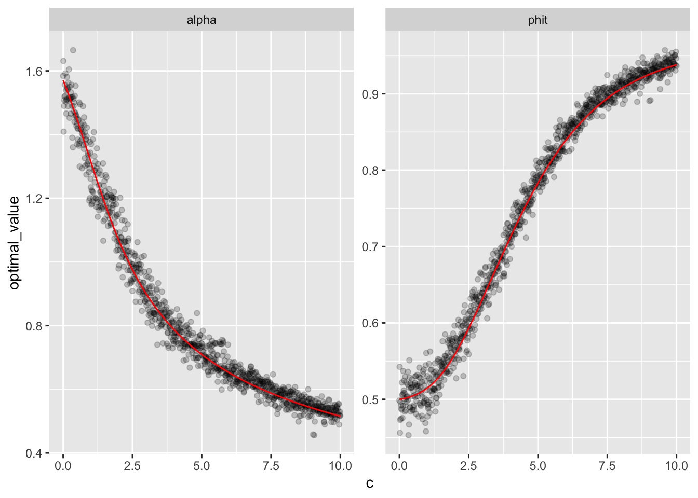
It works well - with 4000 observations, the optimums derived from the empirical cdf are clustered closely around the theoretical values. Now, let’s apply this to our real data.
# A tibble: 8 × 3
setsize alpha phit
<fct> <dbl> <dbl>
1 1 0.489 0.953
2 2 0.698 0.879
3 3 0.733 0.804
4 4 0.908 0.670
5 5 0.960 0.617
6 6 1.01 0.584
7 7 1.17 0.520
8 8 1.24 0.600Remember, these estimates are based only on the point responses, and do not use any information about the given arc width, or the results hit rate - these are completely separate sources of data. Therefore these are parameter free predictions, which gives us what the optimal arc response would be if the subject knew what the response distribution (or the corresponding memory trace strength distribution) will look like. We can now compare them with the actual values to determine how optimal the behavior is.
# A tibble: 8 × 3
setsize arc_obs phit_obs
<fct> <dbl> <dbl>
1 1 0.585 0.937
2 2 0.729 0.878
3 3 0.816 0.816
4 4 0.925 0.705
5 5 1.03 0.682
6 6 1.09 0.641
7 7 1.18 0.567
8 8 1.23 0.591left_join(observed_arc_phit, predicted_empirical_optimals) |>
rename(arc_pred = alpha, phit_pred = phit) |>
gather(key, value, -setsize) |>
separate(key, c("measure", "source")) |>
ggplot(aes(setsize, value, color = source, group = source)) +
geom_point() +
geom_line() +
facet_wrap(~measure)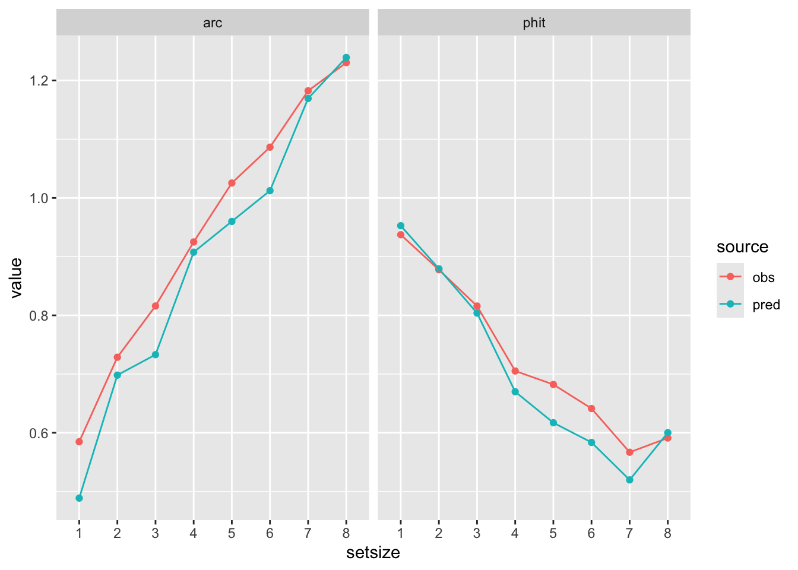
The median observed arc, and the hit rates are remarkably close to optimal. From these we can calculate the optimal amount of points, and then get a measure of optimality by dividing the received points by the optimal amount:
points_by_setsize <- ss_exp |>
group_by(setsize) |>
summarise(points_obs = mean(points))
predicted_empirical_optimals <- predicted_empirical_optimals |>
mutate(points_pred = rad2deg(pi - alpha)*phit) |>
left_join(points_by_setsize) |>
mutate(optimality = points_obs / points_pred)
predicted_empirical_optimals# A tibble: 8 × 6
setsize alpha phit points_pred points_obs optimality
<fct> <dbl> <dbl> <dbl> <dbl> <dbl>
1 1 0.489 0.953 145. 133. 0.917
2 2 0.698 0.879 123. 117. 0.948
3 3 0.733 0.804 111. 103. 0.929
4 4 0.908 0.670 85.7 82.2 0.959
5 5 0.960 0.617 77.1 75.4 0.977
6 6 1.01 0.584 71.2 67.5 0.948
7 7 1.17 0.520 58.7 55.0 0.937
8 8 1.24 0.600 65.4 56.4 0.862ggplot(predicted_empirical_optimals, aes(setsize, optimality, group = 1)) +
geom_point() +
geom_line() +
scale_y_continuous(limits = c(0.5,1)) +
geom_abline(intercept = 0.95, slope = 0, linetype = "dashed")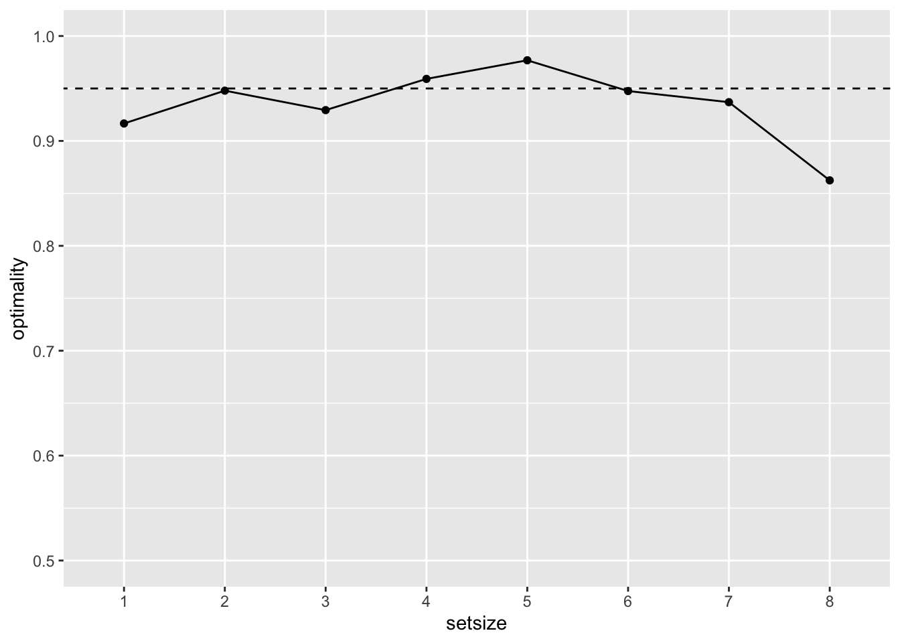
Next, we can do this separately for each participant, and look at how optimal each of them are.
points_by_subject <- ss_exp |>
group_by(subject) |>
summarise(points_obs = mean(points))
predicted_empirical_optimals_subject <- ss_exp |>
group_by(subject) |>
summarise(opt = find_empirical_optimum(resperr)) |>
unnest(opt) |>
mutate(points_pred = rad2deg(pi - alpha)*phit) |>
left_join(points_by_subject) |>
mutate(optimality = points_obs / points_pred)
hist(predicted_empirical_optimals_subject$optimality, breaks = 60)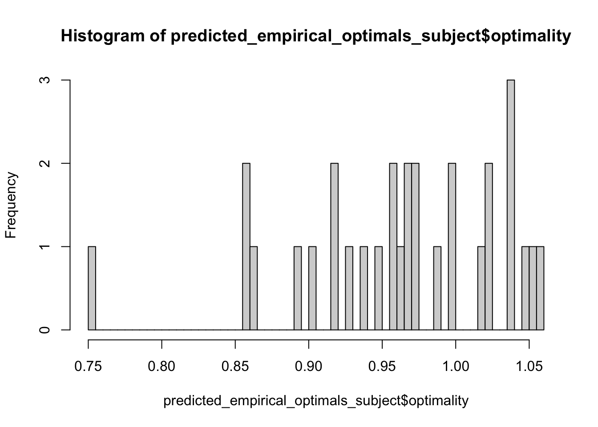
And by setsize:
points_by_setsize_subject <- ss_exp |>
group_by(subject, setsize) |>
summarise(points_obs = mean(points))
predicted_empirical_optimals_subject <- ss_exp |>
group_by(subject, setsize) |>
summarise(opt = find_empirical_optimum(resperr)) |>
unnest(opt) |>
mutate(points_pred = rad2deg(pi - alpha)*phit) |>
left_join(points_by_setsize_subject) |>
mutate(optimality = points_obs / points_pred)
mean(predicted_empirical_optimals_subject$optimality)[1] 0.9137033ggplot(predicted_empirical_optimals_subject, aes(setsize, optimality, color = subject, group = subject)) +
geom_point() +
geom_line() +
geom_abline(intercept = 0.95, slope = 0, linetype = "dashed")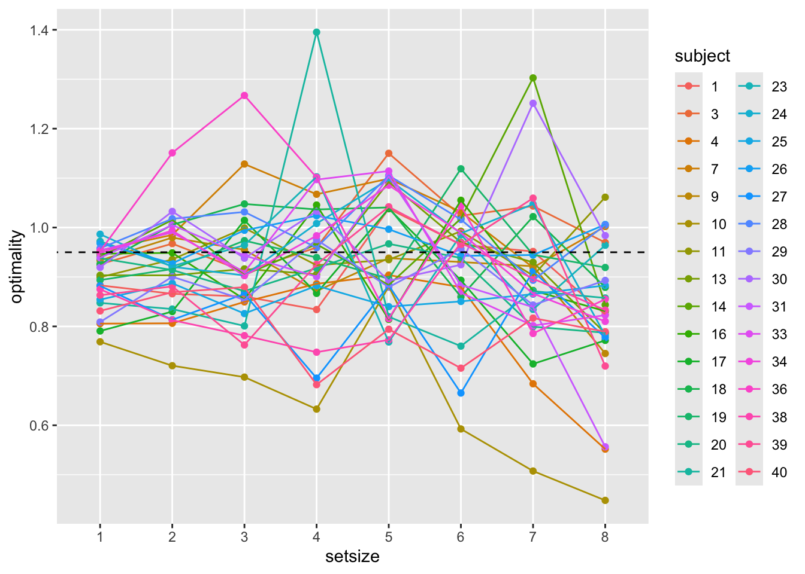
Deriving optimality from fitting the SDM
We fit a hierarchical model varying c and kappa by setsize and random effects for each subject
There are no obvious convergence issues:
fitLoading required namespace: rstan Model: sdm(resp_error = "resperr")
Links: mu = tan_half; c = log; kappa = log
Formula: mu = 0
c ~ 0 + setsize + (0 + setsize || subject)
kappa ~ 0 + setsize + (0 + setsize || subject)
Data: ss_exp (Number of observations: 23977)
Draws: 4 chains, each with iter = 2000; warmup = 1000; thin = 1;
total post-warmup draws = 4000
Multilevel Hyperparameters:
~subject (Number of levels: 30)
Estimate Est.Error l-95% CI u-95% CI Rhat Bulk_ESS Tail_ESS
sd(c_setsize1) 0.21 0.05 0.12 0.32 1.00 1675 1927
sd(c_setsize2) 0.17 0.04 0.11 0.25 1.00 1948 2458
sd(c_setsize3) 0.21 0.04 0.13 0.30 1.00 1525 2496
sd(c_setsize4) 0.27 0.05 0.19 0.38 1.00 1626 2894
sd(c_setsize5) 0.23 0.06 0.12 0.34 1.00 1164 964
sd(c_setsize6) 0.30 0.07 0.19 0.44 1.00 2042 2759
sd(c_setsize7) 0.44 0.11 0.25 0.69 1.00 1826 2301
sd(c_setsize8) 0.32 0.10 0.12 0.52 1.00 983 925
sd(kappa_setsize1) 0.14 0.06 0.02 0.25 1.00 620 595
sd(kappa_setsize2) 0.09 0.05 0.00 0.20 1.01 761 1456
sd(kappa_setsize3) 0.18 0.07 0.04 0.31 1.00 863 985
sd(kappa_setsize4) 0.09 0.07 0.00 0.25 1.00 916 1801
sd(kappa_setsize5) 0.16 0.10 0.01 0.38 1.01 634 1253
sd(kappa_setsize6) 0.23 0.12 0.02 0.49 1.01 740 1065
sd(kappa_setsize7) 0.31 0.20 0.02 0.75 1.00 812 1766
sd(kappa_setsize8) 0.22 0.15 0.01 0.56 1.00 871 1284
Regression Coefficients:
Estimate Est.Error l-95% CI u-95% CI Rhat Bulk_ESS Tail_ESS
c_setsize1 2.35 0.08 2.21 2.51 1.00 3563 3033
c_setsize2 1.92 0.05 1.82 2.02 1.00 3419 2968
c_setsize3 1.64 0.05 1.54 1.75 1.00 3696 3215
c_setsize4 1.31 0.07 1.18 1.45 1.00 2790 2684
c_setsize5 1.02 0.07 0.89 1.15 1.00 2547 2620
c_setsize6 0.82 0.08 0.66 0.98 1.00 2786 2560
c_setsize7 0.17 0.13 -0.10 0.42 1.00 2981 2741
c_setsize8 0.70 0.14 0.44 0.98 1.00 2571 2395
kappa_setsize1 1.10 0.07 0.97 1.23 1.00 4536 2764
kappa_setsize2 1.00 0.05 0.90 1.10 1.00 5667 3054
kappa_setsize3 1.03 0.06 0.90 1.15 1.00 5247 2974
kappa_setsize4 0.92 0.07 0.78 1.06 1.00 6352 2627
kappa_setsize5 1.13 0.09 0.94 1.29 1.00 3396 2395
kappa_setsize6 1.10 0.11 0.87 1.32 1.00 3965 2838
kappa_setsize7 1.38 0.19 0.98 1.73 1.00 3503 2388
kappa_setsize8 0.61 0.19 0.21 0.97 1.00 3125 2376
Constant Parameters:
Value
mu_Intercept 0.00
Draws were sampled using sample(hmc). For each parameter, Bulk_ESS
and Tail_ESS are effective sample size measures, and Rhat is the potential
scale reduction factor on split chains (at convergence, Rhat = 1).Because we have full posterior samples for the sdm parameters, we can determine a posterior prediction for the optimal arc size and hit probability given the parameters of each posterior sample. First, do this using only the population parameters for setsize, similar to the pooled empirical predictions above.
extract_var_draws <- function(draws, var) {
vars <- paste0("b_", var, "_setsize", 1:8)
draws <- draws[,vars]
names(draws) <- 1:8
exp(draws)
}
h_draws <- posterior::as_draws_df(fit)
c_draws <- extract_var_draws(h_draws, "c")
kappa_draws <- extract_var_draws(h_draws, "kappa")
# reshape
c_draws_long <- gather(c_draws, setsize, c)
kappa_draws_long <- gather(kappa_draws, setsize, kappa)
population_posterior <- cbind(c_draws_long, kappa_draws_long[,"kappa"])
# extract the optimums
population_optimum_posterior <- purrr::pmap(population_posterior, \(setsize, c, kappa) find_optimum_sdm(c, kappa))
population_optimum_posterior <- do.call(rbind, population_optimum_posterior)
population_optimum_posterior$setsize <- population_posterior$setsize
# plot the optimums
observed_arc_phit_long <- observed_arc_phit |>
rename(arc = arc_obs, phit = phit_obs) |>
gather(measure, value, -setsize)
population_optimum_posterior |>
rename(arc = alpha) |>
gather(measure, value, -setsize) |>
ggplot(aes(setsize, value)) +
geom_violin() +
geom_point(data = observed_arc_phit_long, color = "red") +
geom_line(data = observed_arc_phit_long, color = "red", aes(group = 1)) +
facet_wrap(~measure)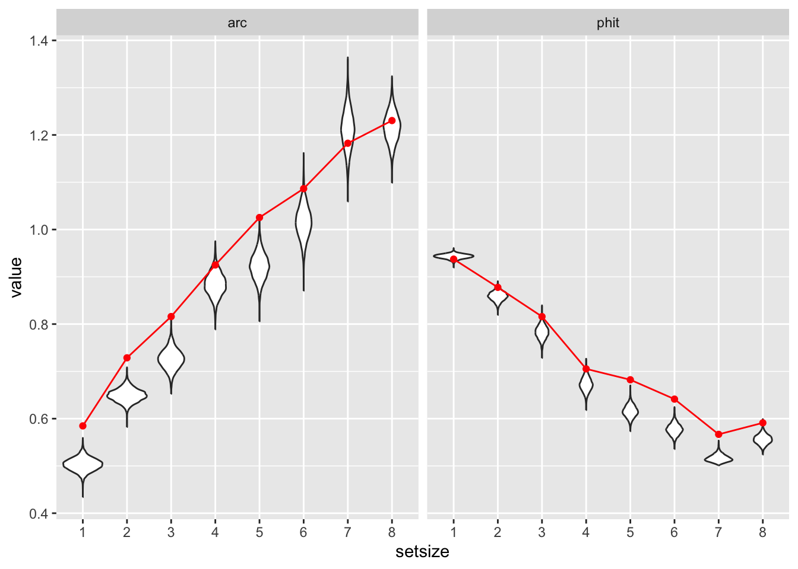
The red dots and line are the observed median arc width and hit rate. The white violin plots show the posterior distributions for predicted optimal arc width and hit rates from the SDM, using the population parameter estimates.
Since this was a hierarchical model, we can estimate predicted optimal behavior for each subject and setsize condition. We can get a full posterior for the optimality coefficient.
extract_var_draws_subj <- function(draws, var, subject_ids) {
pop_vars <- paste0("b_", var, "_setsize", 1:8)
pop_draws <- as.data.frame(draws[,pop_vars])
subj_draws <- posterior::extract_variable_array(
draws,
variable = paste0("r_subject__", var),
with_chains = FALSE
)
for (s in seq_len(length(pop_vars))) {
subj_draws[,,s] <- subj_draws[,,s] + pop_draws[,s]
}
subj_draws <- subj_draws[,subject_ids,]
dimnames(subj_draws)[[2]] <- subject_ids
dimnames(subj_draws)[[3]] <- 1:8
exp(subj_draws)
}
subjects <- as.numeric(as.character(sort(unique(ss_exp$subject))))
c_draws <- extract_var_draws_subj(h_draws, "c", subjects)
kappa_draws <- extract_var_draws_subj(h_draws, "kappa", subjects)
# reshape
c_draws_long <- as.data.frame.table(c_draws, responseName = "value")
colnames(c_draws_long) <- c("iteration", "subject", "setsize", "c")
kappa_draws_long <- as.data.frame.table(kappa_draws, responseName = "value")
colnames(kappa_draws_long) <- c("iteration", "subject", "setsize", "kappa")
subj_posterior <- left_join(c_draws_long, kappa_draws_long)
# extract the optimums. Takes a long time
file <- "output/subj_optimum_posterior.rds"
if (fs::file_exists(file)) {
subj_optimum_posterior <- readRDS(file)
} else {
subj_optimum_posterior <- purrr::pmap(subj_posterior[,c("c","kappa")], find_optimum_sdm)
subj_optimum_posterior <- do.call(rbind, subj_optimum_posterior)
subj_optimum_posterior <- cbind(subj_optimum_posterior, subj_posterior[,c("subject", "setsize")])
saveRDS(subj_optimum_posterior, file)
}
# plot the optimums
observed_arc_phit_subj <- ss_exp |>
group_by(subject, setsize) |>
summarise(arc = median(arc/2),
phit = mean(hit))
observed_arc_phit_subj_long <- observed_arc_phit_subj |>
gather(measure, value, -setsize, -subject)points_by_setsize_subject <- ss_exp |>
group_by(setsize, subject) |>
summarise(points_obs = mean(points)) |>
mutate(subject = as.factor(subject))
subj_optimum_posterior <- subj_optimum_posterior |>
mutate(points_pred = rad2deg(pi - alpha)*phit) |>
left_join(points_by_setsize_subject) |>
mutate(optimality = points_obs / points_pred)
ggplot(subj_optimum_posterior, aes(setsize, optimality)) +
geom_violin() +
geom_abline(intercept = 0.95, slope = 0, linetype = "dashed")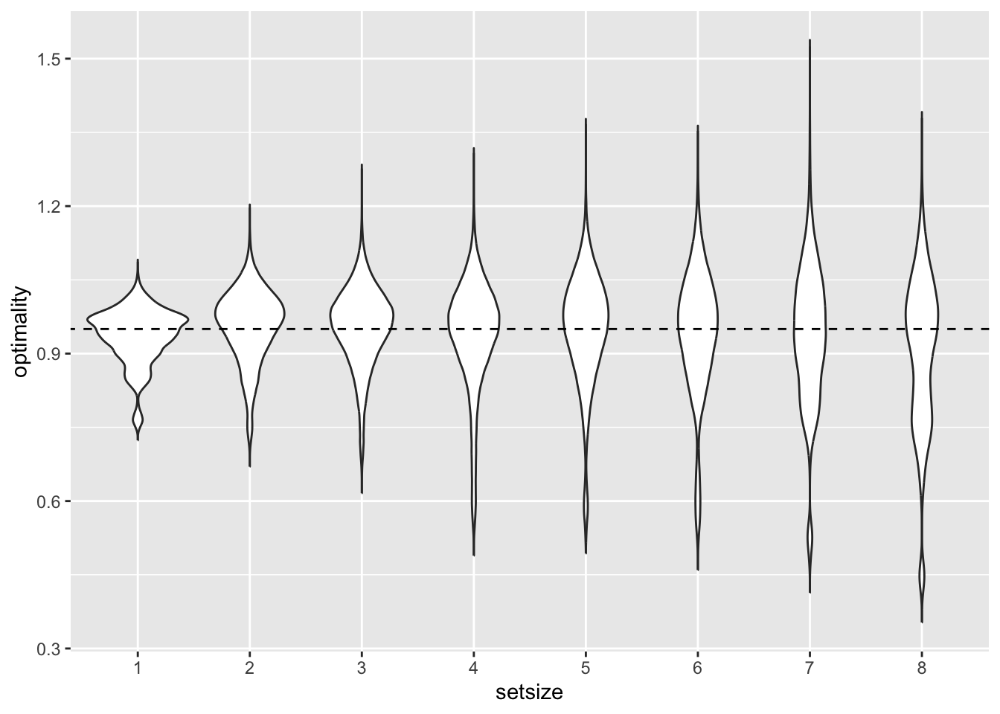
Here are the median arc width response for each subject vs the posterior of the optimal arc width:
subj_optimum_posterior |>
rename(arc = alpha) |>
ggplot(aes(setsize, arc)) +
geom_violin() +
geom_point(data = observed_arc_phit_subj, color = "red") +
geom_line(data = observed_arc_phit_subj, color = "red", aes(group = 1)) +
facet_wrap(~subject)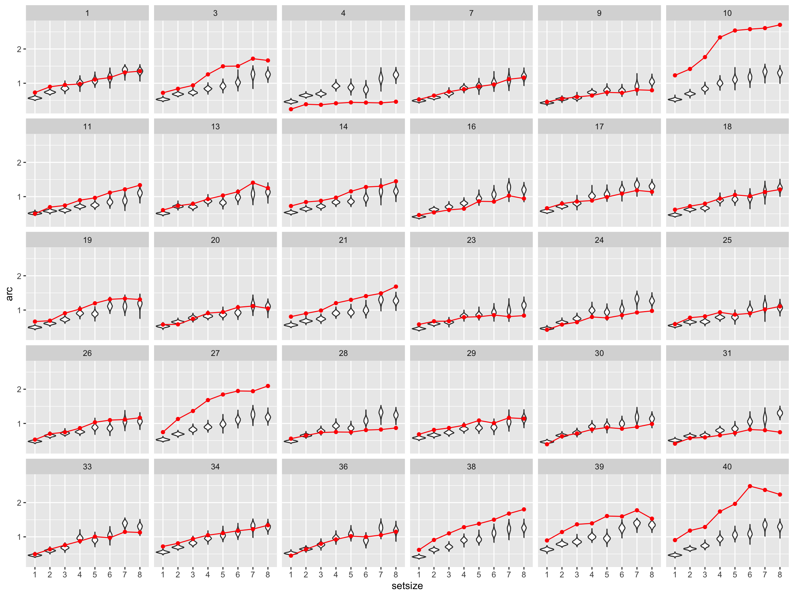
and the same for hit rate:
subj_optimum_posterior |>
ggplot(aes(setsize, phit)) +
geom_violin() +
geom_point(data = observed_arc_phit_subj, color = "red") +
geom_line(data = observed_arc_phit_subj, color = "red", aes(group = 1)) +
facet_wrap(~subject)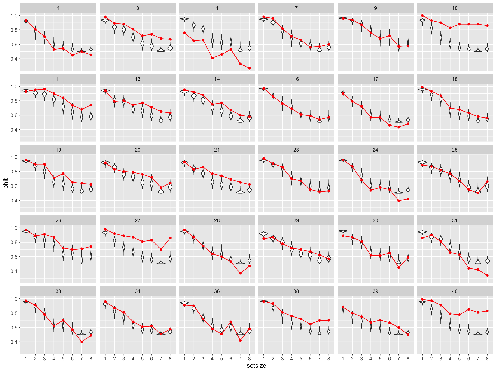
Posteriors (95 HDI) of optimality score for each subject:
subj_optimum_posterior |>
ggplot(aes(subject, optimality)) +
stat_summary(geom = "errorbar", fun.data = \(y) data.frame(y = mean(y), ymin = mean(y) - 2*sd(y), ymax = mean(y) + 2*sd(y))) +
stat_summary(geom = "point") +
scale_y_continuous(breaks = seq(0.3, 1.5, 0.1)) +
theme_bw() +
geom_abline(slope = 0, intercept = 1, linetype = "dashed")No summary function supplied, defaulting to `mean_se()`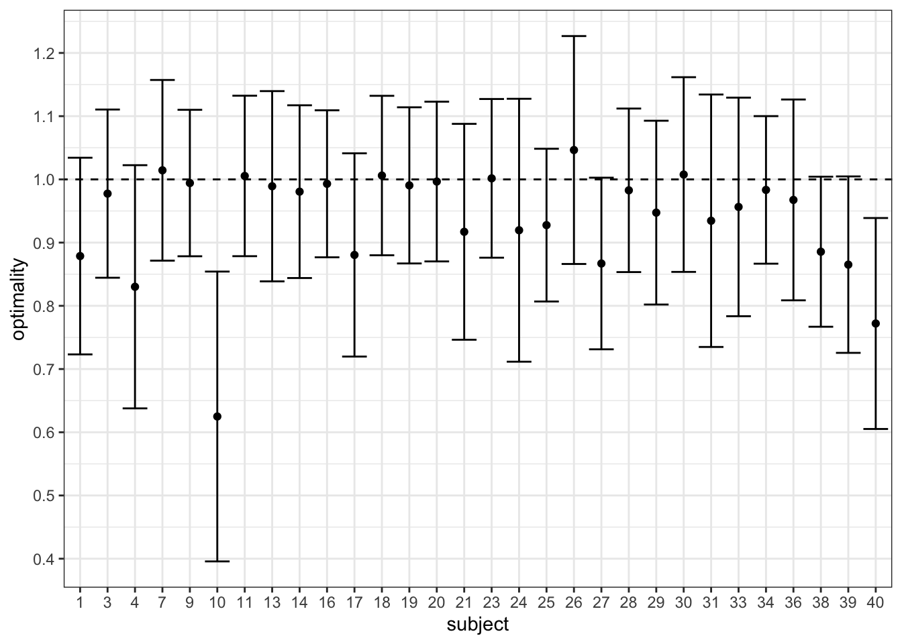